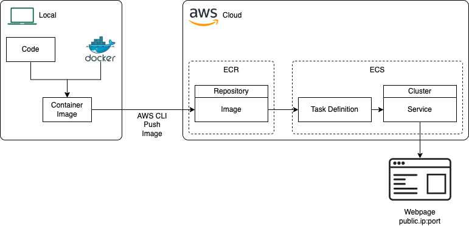

Hosting a Docker Container in AWS Fargate
Introduction
This blog post details how to host a Docker container in AWS. Specifically, using AWS Fargate which provides serverless compute. This tutorial assumes the Docker container being deployed is some kind of web app.
The following diagram gives an overview of what needs to do be done:

The are some prerequistes, the following needs to be installed locally:
- Docker
- AWS CLI
The rest of this post goes through each of the steps to get the Docker container deployed into AWS.
Build Docker Image Locally
The first step is to create a Docker image locally which is going to be used to create the Docker container that will ultimately be hosted in AWS:
- Create local Dockerfile for app
- Build the Docker and tag image using a command of the format:
- docker build . -t my-web-app
Create ECR Repository
Next we need to create somewhere to host our container image in AWS. AWS Elastic Container Registry (ECR) can be used for this. To create a repository to house our image:
- Create a repository
- Set it to Private (so only you/your AWS services can see it)
- Give it a name
- Create
- This gives you a URI of the format:
- [account-number].dkr.ecr.[region].amazonaws.com/[repository-name]
Push Local Docker Image to ECR
Now we can push the Docker image to our ECR repository:
- Tag Docker image with the ECR repository:
- docker tag my-web-app:latest [account number].dkr.ecr.[region].amazonaws.com/[repository-name]:latest
- Authenticate Docker with ECR (note, for this step to work you need to have configured AWS CLI locally to use credentials to access AWS):
- aws ecr get-login-password --region [region] | docker login --username AWS --password-stdin [account-number].dkr.ecr.[region].amazonaws.com
- If this worked you should see a "Login Succeeded" message
- Push the Docker image to ECR:
- docker push [account-number].dkr.ecr.[region].amazonaws.com/[repository-name]:latest
The URI for our ECR image is: docker push [account-number].dkr.ecr.[region].amazonaws.com/[repository-name]:latest - we'll need this later.
Create ECS Cluster
Now we need to setup somewhere to host a container built from the image. For this we'll use AWS Elastic Container Service (ECS). The first thing we need to do in here is create a cluster:
- Go to the ECS service
- Get Started and Create Cluster
- Give the cluster a name
- Select the AWS Fargate (serverless) option for Infrastructure
- Create
Define a Task Defintion
Next up is creating a task definition. This will ultimately be used by a service running in the ECS cluster:
- Under ECS and Task Definitions, create new task definition
- Give it a task definition family
- Select the launch type as AWS Fargate
- In the container information:
- Give it a name and image URI (from the one we made earlier in ECR)
- Add the port mapping
- Create
Create an ECS Service
The last step is to create an ECS service based off the task definition. The ECS service is the actual thing that runs the container.
- Click into the created ECS Cluster, in the services section click Create
- In Deployment Configuration select the Task Definition Family created earier and give the service a name
- Make sure the attached security group has the correct inbound rules, these two rules need to be present in the security group:
- IP = 0.0.0.0/0, Port range = host port
- IP = ::/0, Port range = host port
- Create
- Once the service has been created you should be able to access the container on [public ip]:[host port]